a friendly middle-aged woman, the chief of a small question office, with round black glasses, shoulder-length dark hair with a streak of grey tied in a low ponytail, a warm smile, a mustard-yellow cardigan over a white blouse, ink-navy trousers, brown shoes, a yellow pencil tucked behind one ear
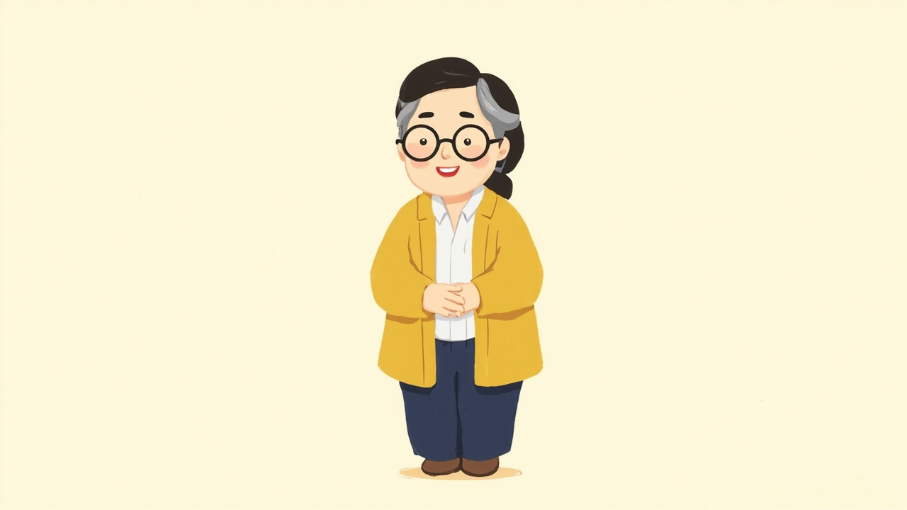
A · judge 6.62/10：appearance: missing yellow pencil behind ear → clearly visible bright yellow pencil tucked behind ear；clean: fingers are undefined and merged together at the hands → distinct chibi fingers clasped neatly；recognizable: the judge found it but did not say what or where (asked: Is the character distinctive, with a face and silhouette that could be kept the same across many shots?) → write the correction into the prompt
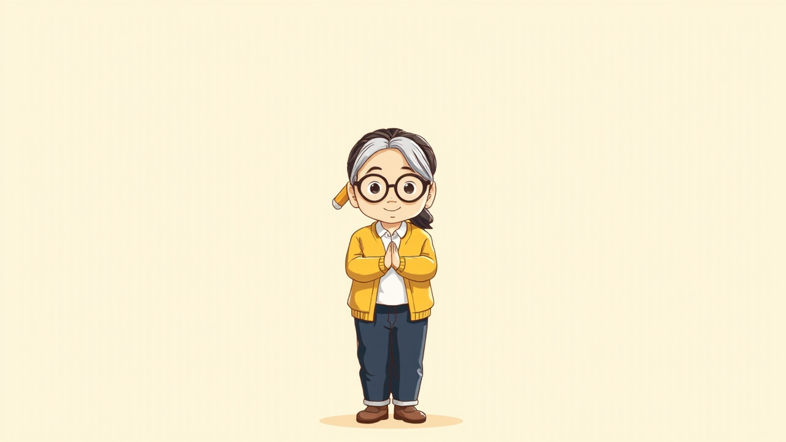
B · judge 6.35/10：appearance: pencil behind the ear is oversized and appears detached from the head → slender yellow pencil neatly tucked behind ear；clean: fingers on clasped hands lack clear definition → clearly articulated fingers in clasped pose；recognizable: the judge found it but did not say what or where (asked: Is the character distinctive, with a face and silhouette that could be kept the same across many shots?) → write the correction into the prompt；style: the judge found it but did not say what or where (asked: Is the picture in the requested visual style?) → write the correction into the prompt
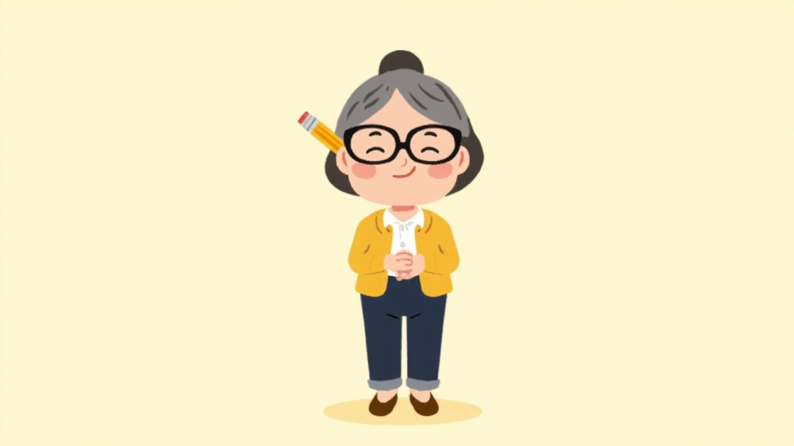
C · judge 6.19/10：appearance: hair is styled in a high grey bun instead of dark hair with a grey streak in a low ponytail → shoulder-length dark hair with a single grey streak in a low ponytail；clean: fingers on the clasped hands are indistinct and blobby → distinct simple fingers；appearance: pencil behind the ear is oversized → realistically proportioned pencil behind ear；recognizable: the judge found it but did not say what or where (asked: Is the character distinctive, with a face and silhouette that could be kept the same across many shots?) → write the correction into the prompt；style: the judge found it but did not say what or where (asked: Is the picture in the requested visual style?) → write the correction into the prompt
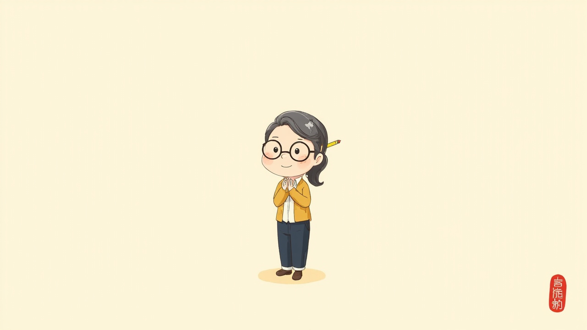
D · judge 6.38/10：no_text: red seal mark with characters in the bottom right corner → without corner stamp seal；clean: pencil placement behind ear appears slightly detached → pencil securely tucked behind ear
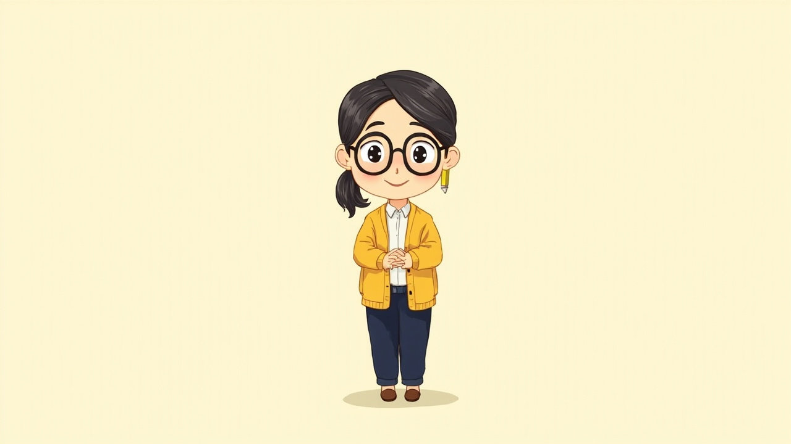
E · judge 6.5/10：appearance: missing grey streak in hair and pencil resembles an earring hanging from the lobe → noticeable streak of grey in low ponytail, full yellow pencil resting behind ear；clean: fingers on clasped hands are muddled and lack separation → clearly drawn clasped fingers
小問（kid）
a curious eight-year-old girl with a short black bob haircut with straight bangs and one small cowlick sticking up on top, large round eyes, wearing a navy raincoat-style jacket with a mustard-yellow hood, white sneakers, holding a small plain blank notebook in both hands
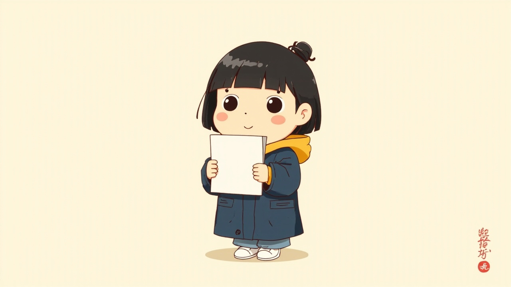
A · judge 6.38/10：no_text: Stylized watermark text and red stamp in the bottom right corner → no signature, no watermark, clean background；appearance: Hair is styled into a mini bun instead of a cowlick on top → one single cowlick hair strand sticking up without a bun；recognizable: the judge found it but did not say what or where (asked: Is the character distinctive, with a face and silhouette that could be kept the same across many shots?) → write the correction into the prompt；clean: the judge found it but did not say what or where (asked: Are anatomy and clothing free of faults: correct hands and fingers, no warped face, nothing floating or duplicated?) → write the correction into the prompt
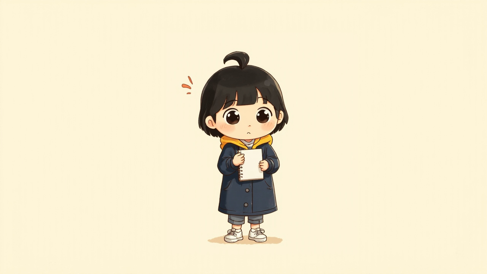
B · judge 6.75/10：clean: fingers on hands holding notebook are slightly fused and indistinct → clearly rendered separate fingers holding notebook
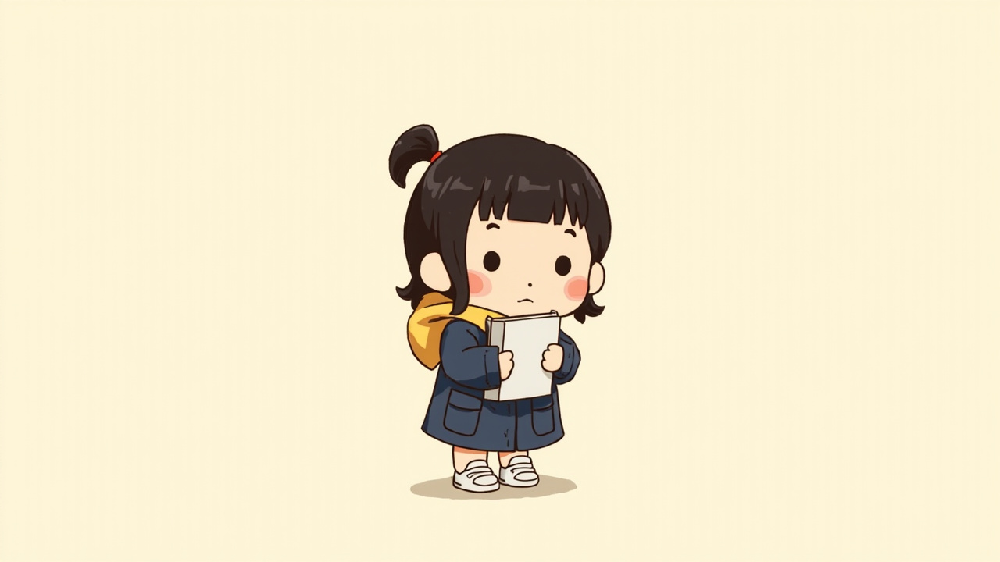
C · judge 6.31/10：appearance: hair tied in a small ponytail with a red band instead of a single cowlick on top → short bob with one small cowlick sticking up, no ponytail or hair tie；recognizable: the judge found it but did not say what or where (asked: Is the character distinctive, with a face and silhouette that could be kept the same across many shots?) → write the correction into the prompt；style: the judge found it but did not say what or where (asked: Is the picture in the requested visual style?) → write the correction into the prompt；clean: the judge found it but did not say what or where (asked: Are anatomy and clothing free of faults: correct hands and fingers, no warped face, nothing floating or duplicated?) → write the correction into the prompt
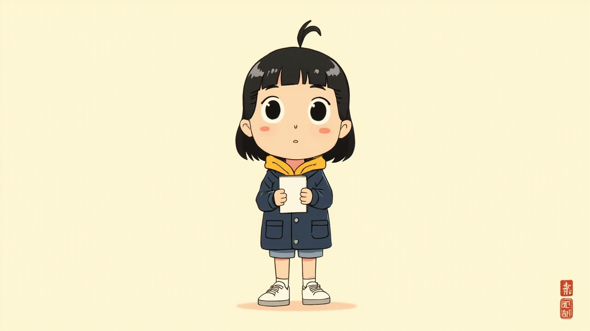
D · judge 6.72/10：no_text: red seal stamp with text characters in the bottom right corner → without corner signature or seal mark；clean: the judge found it but did not say what or where (asked: Are anatomy and clothing free of faults: correct hands and fingers, no warped face, nothing floating or duplicated?) → write the correction into the prompt
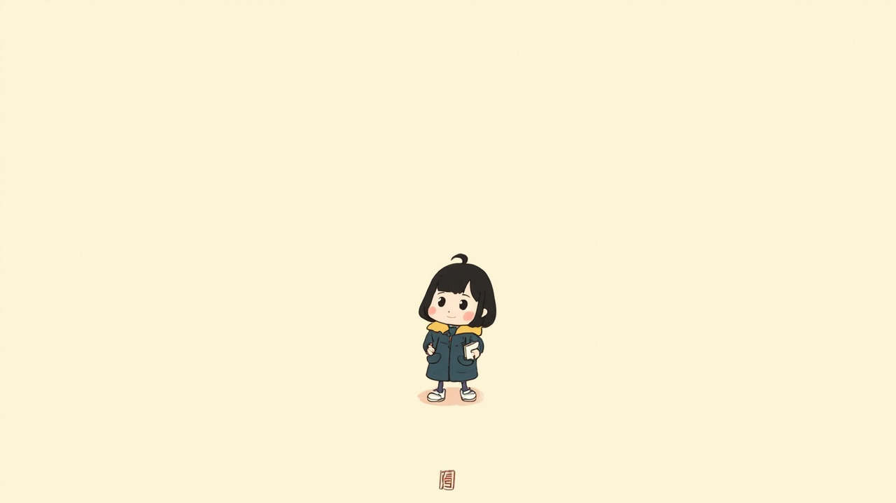
E · judge 6.09/10：no_text: small red stamp mark at the bottom center → without stamp logo or mark；appearance: notebook held in one hand instead of both hands → holding a notebook in both hands；recognizable: the judge found it but did not say what or where (asked: Is the character distinctive, with a face and silhouette that could be kept the same across many shots?) → write the correction into the prompt；style: the judge found it but did not say what or where (asked: Is the picture in the requested visual style?) → write the correction into the prompt；clean: the judge found it but did not say what or where (asked: Are anatomy and clothing free of faults: correct hands and fingers, no warped face, nothing floating or duplicated?) → write the correction into the prompt
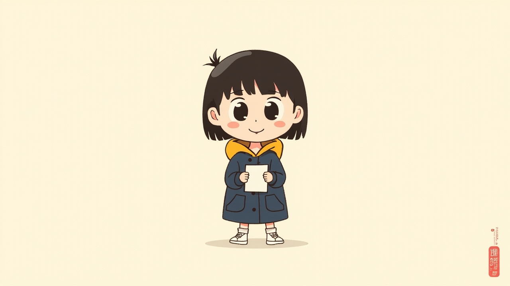
F · judge 6.62/10：no_text: red stamp and text watermark in the bottom right corner → remove watermark, no text in corner